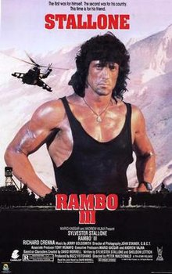

FILMOTECA
all best films here
- Comedy
- Action
- History
 |
||||
| ComDads, 1983 | Twins, 1988 | Taxi, 1998 | ||
|---|---|---|---|---|
| A teenaged boy has run away from home. His father is ineffective at finding him, so his mother contacts two former lovers from around the time her son was conceived, telling them both that the child is their son and asking them to look for him. | Julius and Vincent Benedict are twin brothers, the result of a secret experiment carried out at a genetics laboratory to combine the DNA of six fathers to produce the perfect child. | Daniel Morales is a highly talented driver living in Marseille, France, who has little regard for traffic laws and the police, and is in a loving relationship with his girlfriend Lilly. |
 |
 |
 | ||
| The Terminator, 1984 | Star Wars: Episode I The Phantom Menace, 1999 | Rambo III, 1988 | ||
|---|---|---|---|---|
| the Terminator, a cybernetic assassin sent back in time from 2029 to 1984 to kill Sarah Connor (Linda Hamilton), whose unborn son will one day save mankind from extinction by Skynet, a hostile artificial intelligence in a post-apocalyptic future. | The Trade Federation upsets order in the Galactic Republic by blockading the planet Naboo in secret preparation for a full-scale invasion. | After leaving the United States, former U.S. Army Green Beret John Rambo settles in a Thai monastery, helping with construction work and competing in krabi–krabong matches in Bangkok. |
| Alexander, 2004 | Spartacus, 1960 | The Prince of Egypt, 1998 | ||
|---|---|---|---|---|
| film based on the life of the ancient Macedonian general and king Alexander the Great. | a slave who leads a rebellion against Rome and the events of the Third Servile War. | The first feature film from DreamWorks to be traditionally animated and their second overall, it is an adaptation of the first fourteen chapters of the Book of Exodus and follows the life of Moses from being a prince of Egypt to a prophet of the Lord, chosen by God to carry out his ultimate destiny of leading the Hebrews out of Egypt. |